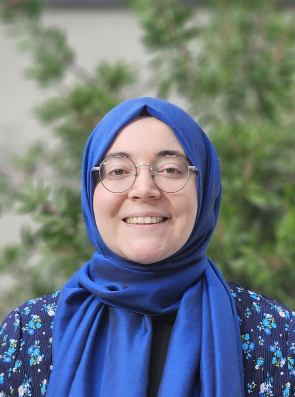

The faculty, researchers, and students of SU-APIS.
Professor
Assistant Professor

Graduate and undergraduate researchers will be listed here. Interested in joining? Email apis.fens@sabanciuniv.edu with your CV and research interests.